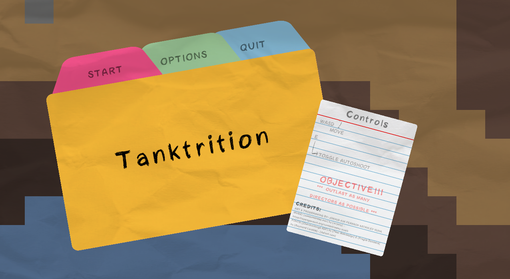

Unity | PC Web
Tanktrition
Tanktrition is a top-down roguelike where you command a formation of tanks battling against waves of enemies spawned by enemy directors.

Design Goal
Our goal was to create a compelling and replayable roguelike experience within the constraints of a 7-day development period. We aimed to design engaging core mechanics, including a unique tank formation system and dynamic enemy behaviors, while also crafting a visually appealing game with original art assets.
Additionally, we wanted to deepen our exprience with Unity2D, particularly in areas of gameplay scripting and procedural content generation, while also honing our ability to rapidly prototype and iterate on game design ideas.
My Role
I served as the primary game designer, and also collaborated on programming and art. I ideated the tank variants, enemy variants, upgrades, and spawning systems. I also scripted the player behaviors, enemy behaviors, projectile behaviors, and upgrade systems. Finally, I created all the art assets for the player tanks, enemy tanks, and UI.
- Link to the initial design doc here
Hurdles
Design Phase
Balancing was very difficult and for the version submitted to the jam, the game was too easy for new players. Specifically the upgrades, and the acquision of new tanks scaled player power much faster than the enemy difficulty scaled, which made the game less engaging and replayable.
Takeaways
This project really helped me grow as a designer and developer. It taught me how to work quickly and efficiently under time constraints, and how to prioritize features and mechanics to create a compelling core gameplay loop. Additionally, I gained valuable experience with Unity2D, particularly in scripting complex behaviors and systems, and in creating cohesive art assets that fit the game's aesthetic.